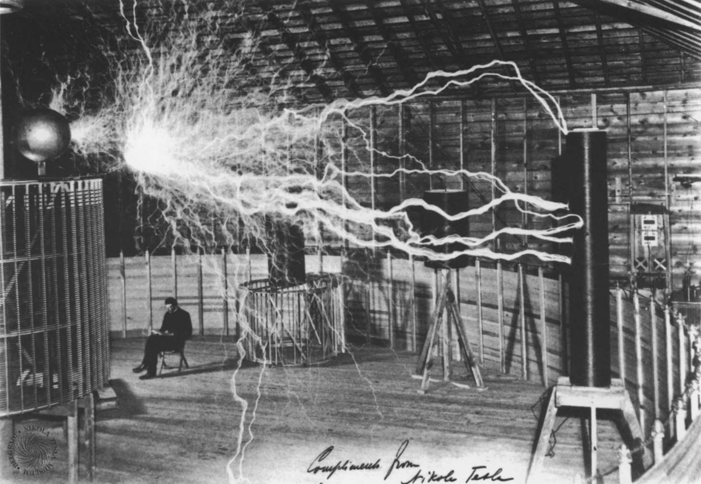

Нікола Тесла
Біографія
За легендою, Нікола Тесла народився точно опівночі дуже грозової ночі. Це сталося в селі Сміляни біля Госпича в Хорватії (Австро-Угорщині). Його батько — Рев Мілутін Тесла — був священиком православної церкви. Мати — Джука Тесла (Мандік) — була донькою православного священика. Вона знала багато народних пісень, але не була писемною, що в той час було досить поширеним. У сім'ї було п'ятеро дітей — двоє хлопців і троє дівчат, Нікола був четвертою дитиною.

1862-го року сім'я переїхала до Госпича, де Тесла вчився у гімназії. Згодом Тесла закінчив школу в Карловаці. Студіював електротехніку у Технічному університеті Граца, де намагався отримати ступінь бакалавра. Але училище не затвердило йому цей ступінь через часті пропуски лекцій. 1880 — навчався у Карловому університеті в Празі.1881 — переїхав до Будапешта, де працював у телеграфній компанії. 1882–1884 — працював у Парижі в Континентальній компанії Едісона. Тоді створив діючу модель індукційного генератора змінного струму.
З 1884-го року Тесла без суттєвих статків переїхав до Нью-Йорка, де також працював спочатку в компанії Едісона, досягнувши великих успіхів. Через рік звільнився через те, що Едісон не виплатив обіцяні за досягнення гроші. Крім того, Едісон був прихильником використання постійного струму, а Тесла вважав, що майбутнє за змінним струмом. Згодом Тесла співпрацював із компанією Westinghouse Electric відомого промисловця Джорджа Вестінгауза, де міг реалізувати свої ідеї. Вестінгауз викупив у Тесли понад 40 патентів (пересічно по 25 тисяч доларів за кожен).
1899-го Тесла публічно продемонстрував газорозрядні лампи і електродвигуни, що працювали на високочастотному струмі без дротів. Упродовж 1900–1905 років — спроба створення Всесвітньої станції бездротової передачі енергії на Лонг-Айленді (проект «Ворденкліф» — Wardenclyffe). Після відмови Джона П. Моргана фінансувати проект, роботи були припинені, а збудовану вежу американський уряд підірвав 1917-го року. Під кінець свого життя Тесла все більше ставав відлюдником. Він помер від серцевої недостатності між 6 та 8 січня 1943 року в готелі «Нью-Йоркер». Незважаючи на велику кількість патентів, Тесла на момент смерті був у боргах. Чимало про життя й діяльність Ніколи Тесли можна дізнатися з його автобіографії «Мої винаходи»[4].